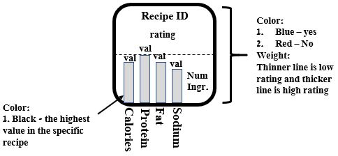

Visualization in Recipes
Recipes By Filters

22-Minutes
Advance-prep
Breakfast
Brunch
Dairy
Dessert
Dinner
Healthy
Gluten-Free
Kid-Friendly
Kosher
Kosher-Passover
Low-Cholesterol
Low-Sugar
Lunch
Meat
Paleo
Pescatarian
Seafood
Vegan
Vegeterian
Change Filter
Rating
Calories
Ingredients
Protein
Fat
Sodium
22-Minutes
Advance-prep
Breakfast
Brunch
Dairy
Dessert
Dinner
Healthy
Gluten-Free
Kid-Friendly
Kosher
Kosher-Passover
Low-Cholesterol
Low-Sugar
Lunch
Meat
Paleo
Pescatarian
Seafood
Vegan
Vegeterian
Ascending
Descending
Sort